Benchmark: Solution of an NPZD model
We use the NPZD model prob_pds_npzd to assess the efficiency of different solvers from OrdinaryDiffEq.jl and PositiveIntegrators.jl.
using OrdinaryDiffEqLowOrderRK, OrdinaryDiffEqSDIRK, OrdinaryDiffEqRosenbrockusing OrdinaryDiffEqTsit5, OrdinaryDiffEqVernerusing PositiveIntegrators# select NPZD problemprob = prob_pds_npzdTo keep the following code as clear as possible, we define a helper function npzd_plot that we use for plotting.
using Plotsfunction npzd_plot(sol, sol_ref = nothing, title = "") colors = palette(:default)[1:4]' if !isnothing(sol_ref) p = plot(sol_ref, linestyle = :dash, label = "", color = colors, linewidth = 2) plot!(p, sol; denseplot = false, markers = :circle, ylims = (-1.0, 10.0), color = colors, title, label = ["N" "P" "Z" "D"], legend = :right, linewidth = 2); else p = plot(sol; denseplot = false, markers = :circle, ylims = (-1.0, 10.0), color = colors, title, label = ["N" "P" "Z" "D"], legend = :right, linewidths = 2); end return pendStandard methods have difficulties to solve the NPZD problem accurately for loose tolerances or large time step sizes. This is because the first variable, $N$, has only a tiny margin for negative values. In most cases, negative values of $N$ will directly lead to a further decrease in $N$, resulting in completely inaccurate solutions.
# compute reference solution for plottingref_sol = solve(prob, Vern7(); abstol = 1e-14, reltol = 1e-13);# compute solutions with loose tolerancesabstol = 1e-2reltol = 1e-1sol_Ros23 = solve(prob, Rosenbrock23(); abstol, reltol);sol_MPRK = solve(prob, MPRK22(1.0); abstol, reltol);# plot solutionsp1 = npzd_plot(sol_Ros23, ref_sol, "Rosenbrock23"); # helper function defined abovep2 = npzd_plot(sol_MPRK, ref_sol, "MPRK22(1.0)");plot(p1, p2)
Nevertheless, OrdinaryDiffEq.jl provides the solver option isoutofdomain, which can be used in combination with isnegative to guarantee nonnegative solutions.
sol_Ros23 = solve(prob, Rosenbrock23(); abstol, reltol, isoutofdomain = isnegative); #reject negative solutionsnpzd_plot(sol_Ros23, ref_sol) #auxiliary function defined above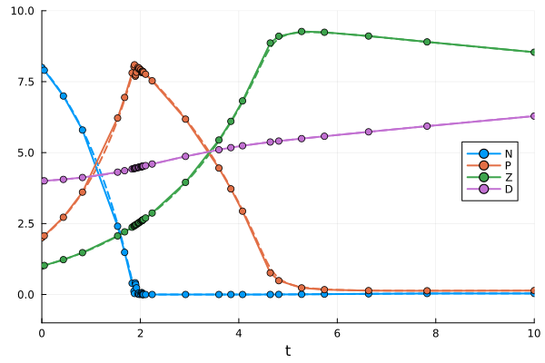
Work-Precision diagrams
In the following sections, we present several work-precision diagrams that compare various methods in terms of computing time and error. First, we focus on adaptive methods; afterward, we also display resultsixed time step sizes. obtained with f
Since the NPZD problem is not stiff, we can use an explicit high-order scheme to compute a reference solution.
# select solver to compute reference solutionalg_ref = Vern7()Adaptive schemes
We use the functions work_precision_adaptive and work_precision_adaptive! to compute the data for the diagrams. Furthermore, the following absolute and relative tolerances are used.
# set absolute and relative tolerancesabstols = 1.0 ./ 10.0 .^ (2:1:8)reltols = abstols .* 10.0Relative maximum error at the final time
In this section the chosen error is the relative maximum error at the final time $t = 10.0$.
# select relative maximum error at the end of the problem's time span.compute_error = rel_max_error_tendWe start with a comparison of different adaptive MPRK schemes.
# choose methods to comparealgs = [MPRK22(0.5); MPRK22(2.0 / 3.0); MPRK22(1.0); SSPMPRK22(0.5, 1.0); MPRK43I(1.0, 0.5); MPRK43I(0.5, 0.75); MPRK43II(0.5); MPRK43II(2.0 / 3.0); MPDeC(2); MPDeC(3); MPDeC(4); MPDeC(5); MPDeC(6); MPDeC(7); MPDeC(8); MPDeC(9); MPDeC(10)]labels = ["MPRK22(0.5)"; "MPPRK22(2/3)"; "MPRK22(1.0)"; "SSPMPRK22(0.5,1.0)"; "MPRK43I(1.0, 0.5)"; "MPRK43I(0.5, 0.75)"; "MPRK43II(0.5)"; "MPRK43II(2.0/3.0)"; "MPDeC(2)"; "MPDeC(3)"; "MPDeC(4)"; "MPDeC(5)"; "MPDeC(6)"; "MPDeC(7)"; "MPDeC(8)"; "MPDeC(9)"; "MPDeC(10)"]# compute work-precision datawp = work_precision_adaptive(prob, algs, labels, abstols, reltols, alg_ref; compute_error)# plot work-precision diagramplot(wp, labels; title = "NPZD benchmark", legend = :outerright, color = permutedims([repeat([1], 3)..., 2, repeat([3], 2)..., repeat([4], 2)..., repeat([5], 5)..., repeat([6], 4)...]), xlims = (10^-8, 2*10^-1), xticks = 10.0 .^ (-8:1:0), ylims = (10^-5, 10^-1), yticks = 10.0 .^ (-5:1:-1), minorticks = 10)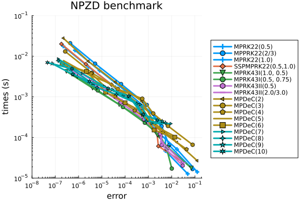
All methods behave very similarly. In particular, there is no superior performance of the high-order MPDeC methods. For comparisons with other schemes we choose MPRK22(1.0) and MPRK43I(1.0, 0.5).
sol_MPRK22 = solve(prob, MPRK22(1.0); abstol, reltol)sol_MPRK43 = solve(prob, MPRK43I(1.0, 0.5); abstol, reltol)p1 = npzd_plot(sol_MPRK22, ref_sol, "MPRK22(1.0)");p2 = npzd_plot(sol_MPRK43, ref_sol, "MPRK43I(1.0, 0.5)");plot(p1, p2)
Next we compare MPRK22(1.0) and MPRK43I(1.0, 0.5) with explicit and implicit methods of second and third order from OrdinaryDiffEq.jl. To guarantee nonnegative solutions, we select the solver option isoutofdomain = isnegative.
# select MPRK methods for referencealgs1 = [MPRK22(1.0); MPRK43I(1.0, 0.5)]labels1 = ["MPRK22(1.0)"; "MPRK43I(1.0,0.5)"]# select methods from OrdinaryDiffEqalgs2 = [Midpoint(); Heun(); Ralston(); TRBDF2(); SDIRK2(); Kvaerno3(); KenCarp3(); Rodas3(); ROS2(); ROS3(); Rosenbrock23()]labels2 = ["Midpoint"; "Heun"; "Ralston"; "TRBDF2"; "SDIRK2"; "Kvearno3"; "KenCarp3"; "Rodas3"; "ROS2"; "ROS3"; "Rosenbrock23"]# compute work-precision datawp = work_precision_adaptive(prob, algs1, labels1, abstols, reltols, alg_ref; compute_error)# add work-precision data with isoutofdomain=isnegativework_precision_adaptive!(wp, prob, algs2, labels2, abstols, reltols, alg_ref; compute_error, isoutofdomain=isnegative)plot(wp, [labels1; labels2]; title = "NPZD benchmark", legend = :topright, color = permutedims([1, 3, repeat([4], 3)..., repeat([5], 4)..., repeat([6], 4)...]), xlims = (5*10^-8, 2*10^-1), xticks = 10.0 .^ (-8:1:0), ylims = (10^-5, 10^0), yticks = 10.0 .^ (-5:1:0), minorticks = 10)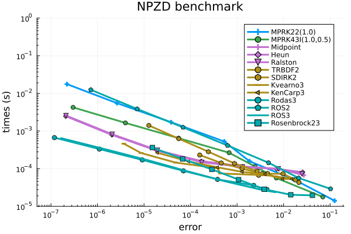
We see that for the NPZD problem the use of adaptive MPRK schemes is only beneficial when using the loosest tolerances.
Now we compare MPRK22(1.0) and MPRK43I(1.0, 0.5) to recommended solvers from OrdinaryDiffEq.jl. Again, to guarantee positive solutions we select the solver option isoutofdomain = isnegative.
algs3 = [Tsit5(); BS3(); Vern6(); Vern7(); Vern8(); TRBDF2(); Rosenbrock23(); Rodas5P(); Rodas4P()]labels3 = ["Tsit5"; "BS3"; "Vern6"; "Vern7"; "Vern8"; "TRBDF2"; "Rosenbrock23"; "Rodas5P"; "Rodas4P"]# compute work-precision datawp = work_precision_adaptive(prob, algs1, labels1, abstols, reltols, alg_ref; compute_error)# add work-precision data with isoutofdomain = isnegativework_precision_adaptive!(wp, prob, algs3, labels3, abstols, reltols, alg_ref; compute_error, isoutofdomain = isnegative)# plot work-precision diagramplot(wp, [labels1; labels3]; title = "NPZD benchmark", legend = :topright, color = permutedims([1, 3, repeat([4], 5)...,5, repeat([6], 1)...,repeat([7],2)...]), xlims = (10^-11, 10^1), xticks = 10.0 .^ (-11:1:1), ylims = (10^-5, 10^0), yticks = 10.0 .^ (-5:1:0), minorticks = 10)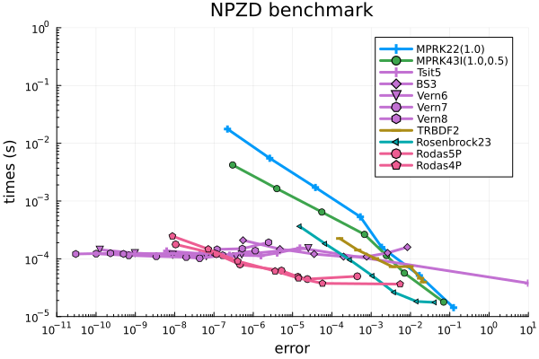
We see that it is advisable to use a high-order explicit method like Vern7() or Rosenbrock methods like Rodas4P() with isoutofdomain = isnegative to obtain nonnegative solutions of such a non-stiff problem.
Relative maximum error over all time steps
In this section we do not compare the relative maximum errors at the final time $t = 10.0$, but the relative maximum errors over all time steps.
# select relative maximum error over all time stepscompute_error = rel_max_error_overallThe results are very similar to those from above. We therefore only show the work-precision diagrams without further comments. The main difference are significantly increased errors which mainly occur around time $t = 2.0$ where there is a sharp kink in the solution.
# compute work-precision datawp = work_precision_adaptive(prob, algs, labels, abstols, reltols, alg_ref; compute_error)# plot work-precision diagramplot(wp, labels; title = "NPZD benchmark", legend = :outerright, color = permutedims([repeat([1], 3)..., 2, repeat([3], 2)..., repeat([4], 2)..., repeat([5], 5)..., repeat([6], 4)...]), xlims = (10^-5, 10^4), xticks = 10.0 .^ (-5:1:4), ylims = (10^-5, 10^-1), yticks = 10.0 .^ (-5:1:0), minorticks = 10)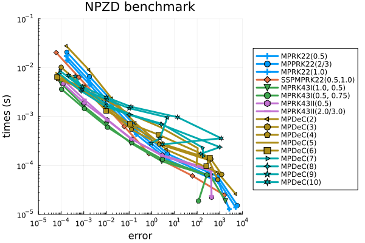
# compute work-precision datawp = work_precision_adaptive(prob, algs1, labels1, abstols, reltols, alg_ref; compute_error)# add work-precision data with isoutofdomain = isnegativework_precision_adaptive!(wp, prob, algs2, labels2, abstols, reltols, alg_ref; compute_error, isoutofdomain=isnegative)# plot work-precision diagramplot(wp, [labels1; labels2]; title = "NPZD benchmark", legend = :topright, color = permutedims([1, 3, repeat([4], 3)..., repeat([5], 4)..., repeat([6], 4)...]), xlims = (10^-5, 10^4), xticks = 10.0 .^ (-5:1:4), ylims = (10^-6, 10^0), yticks = 10.0 .^ (-6:1:0), minorticks = 10)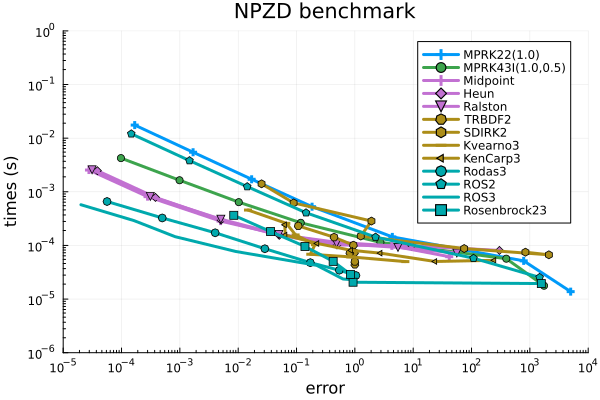
# compute work-precision datawp = work_precision_adaptive(prob, algs1, labels1, abstols, reltols, alg_ref; compute_error)# add work-precision data with isoutofdomain = isnegativework_precision_adaptive!(wp, prob, algs3, labels3, abstols, reltols, alg_ref; compute_error, isoutofdomain=isnegative)# plot work-precision diagramplot(wp, [labels1; labels3]; title = "NPZD benchmark", legend = :topright, color = permutedims([1, 3, repeat([4], 5)...,5, repeat([6], 1)...,repeat([7],2)...]), xlims = (10^-7, 10^5), xticks = 10.0 .^ (-7:1:5), ylims = (10^-6, 10^0), yticks = 10.0 .^ (-6:1:0), minorticks = 10)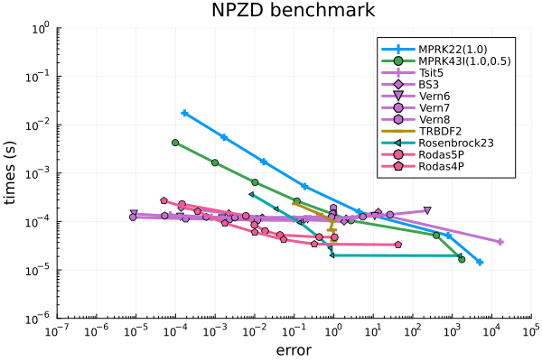
Fixed time step sizes
Here we use fixed time step sizes instead of adaptive time stepping. Similar to the adaptive situation above, standard schemes are likely to compute negative solutions for the NPZD problem.
sol_Ros23 = solve(prob, Rosenbrock23(), dt = 1.0, adaptive = false);sol_MPRK = solve(prob, MPRK22(1.0), dt = 1.0, adaptive = false);p1 = npzd_plot(sol_Ros23, ref_sol, "Rosenbrock23");p2 = npzd_plot(sol_MPRK, ref_sol, "MPRK22(1.0)");plot(p1, p2)
We use the functions work_precision_fixed and work_precision_fixed! to compute the data for the diagrams. Please note that these functions set error and computing time to Inf, whenever a solution contains negative elements. Consequently, such cases are not visible in the work-precision diagrams.
Within the work-precision diagrams we use the following time step sizes.
# set time step sizesdts = 1.0 ./ 2.0 .^ (0:1:12)Relative maximum error at the end of the problem's time span
Again, we start with the relative maximum error at the final time $t = 10.0$.
# select relative maximum error at the end of the problem's time span.compute_error = rel_max_error_tendFirst, we compare different MPRK methods. For fixed time step sizes we can also consider MPE(), SSPMPRK43() and the various MPLM schemes.
# choose MPRK methods to comparealgs = [MPE(); algs; SSPMPRK43(); MPLM22(); MPLM33(); MPLM43(); MPLM54(); MPLM75(); MPLM106()]labels = ["MPE"; labels; "SSPMPRK43"; "MPLM22"; "MPLM33"; "MPLM43"; "MPLM54"; "MPLM75"; "MPLM106"]# compute work-precision datawp = work_precision_fixed(prob, algs, labels, dts, alg_ref; compute_error)# plot work-precision diagramplot(wp, labels; title = "NPZD benchmark", legend = :outerright, color = permutedims([5,repeat([1], 3)..., 2, repeat([3], 2)..., repeat([4], 2)..., repeat([5], 5)..., repeat([6], 4)..., 7, repeat([13], 6)...]), xlims = (10^-13, 1*10^0), xticks = 10.0 .^ (-13:1:0), ylims = (1*10^-6, 10^1), yticks = 10.0 .^ (-6:1:1), minorticks = 10)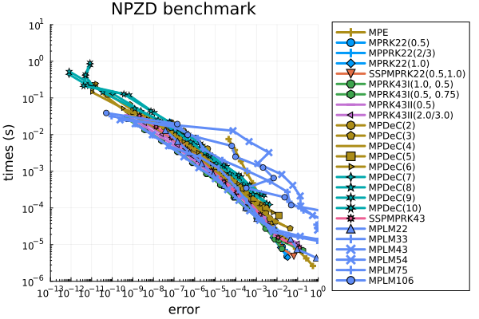
Apart from MPE() the schemes behave very similar and there is no superior performance of the higher-order schemes observable. We choose MPRK22(1.0), MPRK43I(1.0, 0.5) and MPLM43() for comparisons with other schemes from OrdinaryDiffEq.jl. First, we compare these methods with other second- and third-order schemes.
algs1 = [MPRK22(1.0); MPRK43I(1.0, 0.5); MPLM43()]labels1 = ["MPRK22(1.0)"; "MPRK43I(1.0,0.5)"; "MPLM43"]# compute work-precision datawp = work_precision_fixed(prob, [algs1; algs2], [labels1; labels2], dts, alg_ref; compute_error)# plot work-precision diagramplot(wp, [labels1; labels2]; title = "NPZD benchmark", legend = :topright, color = permutedims([1, 3, 13, repeat([4], 3)..., repeat([5],4)...,repeat([6],4)...]), xlims = (10^-13, 10^2), xticks = 10.0 .^ (-12:2:6), ylims = (10^-6, 10^0), yticks = 10.0 .^ (-5:1:0), minorticks = 10)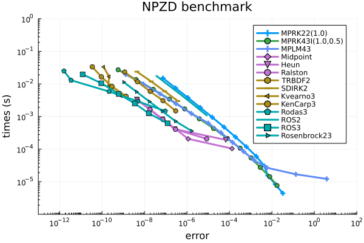
We see that the MPRK schemes are to be preferred for the rather large step sizes $\Delta t \in\lbrace 1.0, 0.5, 0.25, 0.125\rbrace$, for which the other schemes cannot provide nonnegative solutions.
# solution computed with MPRK43I(1.0, 0.5) and dt = 0.125sol_MPRK = solve(prob, MPRK43I(1.0, 0.5); dt = dts[4], adaptive = false);# plot solutionnpzd_plot(sol_MPRK, ref_sol)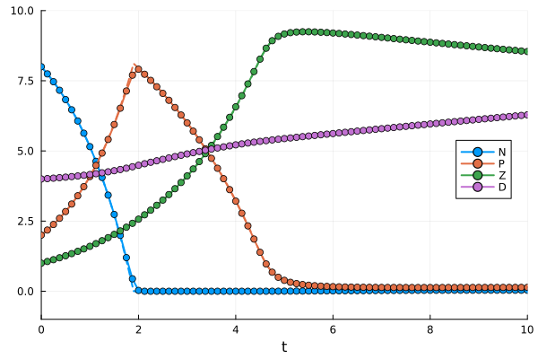
Finally, we show a comparison of MPRK22(1.0), MPRK43I(1.0, 0.5), MPLM43() and recommended solvers from OrdinaryDiffEq.jl.
# compute work-precision datawp = work_precision_fixed(prob, [algs1; algs3], [labels1; labels3], dts, alg_ref; compute_error)# plot work-precision diagramplot(wp, [labels1; labels3]; title = "NPZD benchmark", legend = :topright, color = permutedims([1, 3, 13, repeat([4], 3)..., repeat([5],4)...,repeat([6],4)...]), xlims = (10^-14, 10^0), xticks = 10.0 .^ (-14:2:10), ylims = (10^-6, 10^0), yticks = 10.0 .^ (-5:1:0), minorticks = 10)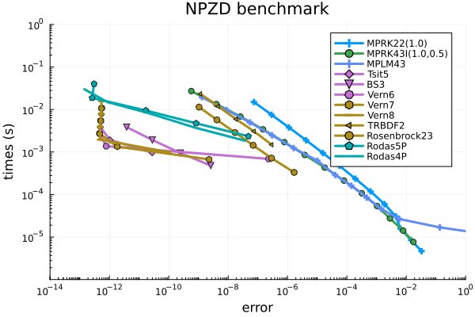
Relative maximum error over all time steps
As for the adaptive schemes, we also show work-precisions diagrams where the error is the relative maximum error over all time steps.
# select relative maximum error over all time stepscompute_error = rel_max_error_overall# compute work-precisionwp = work_precision_fixed(prob, algs, labels, dts, alg_ref; compute_error)#plot work-precision diagramplot(wp, labels; title = "NPZD benchmark", legend = :outerright, color = permutedims([5,repeat([1], 3)..., 2, repeat([3], 2)..., repeat([4], 2)..., repeat([5], 5)..., repeat([6], 4)..., 7, repeat([13], 6)...]), xlims = (10^-9, 10^5), xticks = 10.0 .^ (-9:1:5), ylims = (10^-6, 10^1), yticks = 10.0 .^ (-6:1:1), minorticks = 10)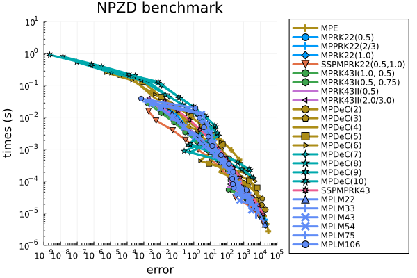
wp = work_precision_fixed(prob, algs1, labels1, dts, alg_ref; compute_error)work_precision_fixed!(wp, prob, algs2, labels2, dts, alg_ref; compute_error)plot(wp, [labels1; labels2]; title = "NPZD benchmark", legend = :topright, color = permutedims([1, 3, repeat([4], 3)..., repeat([5], 4)..., repeat([6], 4)...]), xlims = (10^-4, 10^6), xticks = 10.0 .^ (-12:1:6), ylims = (10^-6, 10^0), yticks = 10.0 .^ (-5:1:0), minorticks = 10)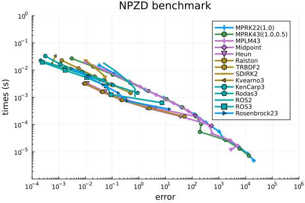
wp = work_precision_fixed(prob, algs1, labels1, dts, alg_ref; compute_error)work_precision_fixed!(wp, prob, algs3, labels3, dts, alg_ref; compute_error)plot(wp, [labels1; labels3]; title = "NPZD benchmark", legend = :bottomleft, color = permutedims([1, 3, repeat([4], 5)..., 5, repeat([7], 3)...]), xlims = (10^-12, 10^6), xticks = 10.0 .^ (-12:2:6), ylims = (10^-6, 10^0), yticks = 10.0 .^ (-5:1:0), minorticks = 10)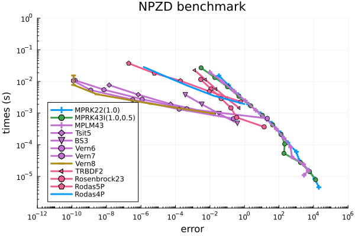
Package versions
These results were obtained using the following versions.
using InteractiveUtilsversioninfo()println()using PkgPkg.status(["PositiveIntegrators", "StaticArrays", "LinearSolve", "OrdinaryDiffEqLowOrderRK", "OrdinaryDiffEqSDIRK", "OrdinaryDiffEqRosenbrock", "OrdinaryDiffEqTsit5", "OrdinaryDiffEqVerner"], mode = PKGMODE_MANIFEST)Julia Version 1.12.7
Commit 6d172b025e4 (2026-08-15 08:05 UTC)
Build Info:
Official https://julialang.org release
Platform Info:
OS: Linux (x86_64-linux-gnu)
CPU: 4 × INTEL(R) XEON(R) PLATINUM 8573C
WORD_SIZE: 64
LLVM: libLLVM-18.1.7 (ORCJIT, sapphirerapids)
GC: Built with stock GC
Threads: 1 default, 1 interactive, 1 GC (on 4 virtual cores)
Environment:
JULIA_PKG_SERVER_REGISTRY_PREFERENCE = eager
Status `~/work/PositiveIntegrators.jl/PositiveIntegrators.jl/docs/Manifest.toml`
[7ed4a6bd] LinearSolve v5.15.1
[1344f307] OrdinaryDiffEqLowOrderRK v2.2.5
[43230ef6] OrdinaryDiffEqRosenbrock v2.7.1
[2d112036] OrdinaryDiffEqSDIRK v2.9.2
[b1df2697] OrdinaryDiffEqTsit5 v2.1.4
[79d7bb75] OrdinaryDiffEqVerner v2.4.1
[d1b20bf0] PositiveIntegrators v0.2.20-DEV `~/work/PositiveIntegrators.jl/PositiveIntegrators.jl`
[90137ffa] StaticArrays v1.9.19